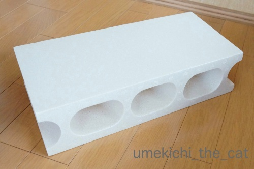
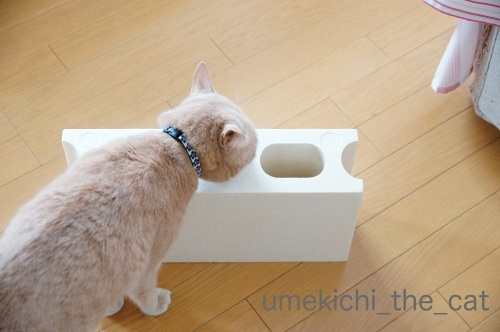
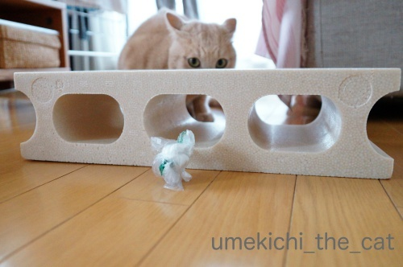
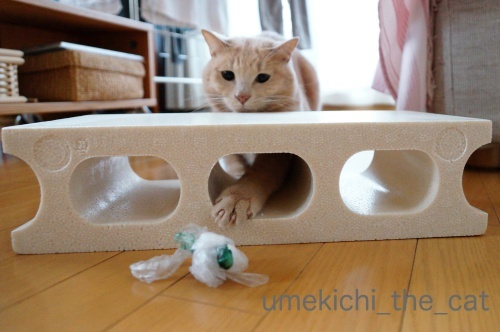
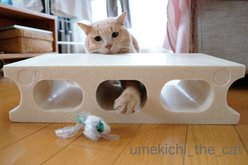

ブロックは何になる？〜年末年始のまとめその１〜 [梅吉]
年末、おっとがホームセンターでこんなものを買ってきました。

発泡スチロールで出来たブロックです。一個300円くらいだったかな。

当然警備主任のチェックが入ります。
発泡スチロール、先日ぽちの輔さんちのニャンズさんが大活躍されていたのを思い出して
ちょっと嫌な予感がしたのですが・・・
（今の所）梅吉は大丈夫なようです。ま、猫様なのでいつ気が変わるかわかりませんけどw

こういう穴のあるものはこうしたくなっちゃいますよねー。

さすが！ノリがいいね！！梅吉さん0(≧▽≦)0

手探りな感じが楽しいかな。

見えてるのになかなか掴めないのも楽しさ倍増！

お目目まっくろだねー！
おもちゃとしても使えるブロックですがこれはあるものになる予定なのです。
それは！次回の記事で＾＾
（引っ張りますw）
以下年末年始のまとめです。
覚書なのでスルーしてくださいね＾＾
30日。
今年一年無事に過ごせたお礼をしに住吉大社へ。
お賽銭スペースが前面に張り出して初詣の受け入れも万全。
神馬の白雪さんにもご挨拶。
やっぱりおしりなのだ。
近所の商店街へお正月用のお花などを買いに。
ランチは商店街のお蕎麦屋さんで年越しそば。
そば粉100%のコロッケがほくほくねっとりでとっても美味しかった。
もう一品はだし巻き卵。当然ビールが進むwww
〆はもりそば。おっとは鴨汁そば。
鴨汁にはロース、もも肉、鴨肉団子と三種入っていてお得感が＾＾
31日。お家にこもっておせち作り。（おっとはホームセンターでブロック購入。）
うま煮を作り始めるとくんくんする梅吉(≧▽≦)
お夕食はすき焼きー！
1日。
近所の小さい方の神社に初詣。すみよっさんは人が多くて近づけません(-_-メ)
今年は神社の境内で採れた梅を使った「福梅」をいただいてきました。
(「梅」と付くものに弱いw
でも梅アイテムは多いので買いすぎぬよう気を強く持つのが大変ですwww）
後日お酒のアテになりました(*>艸<)
お神酒と一緒に神社でついたお餅も授与していただけるのですが
早速お雑煮になりました。（つきたてではありません。）
以上、お正月休み前半ダイジェストでした。
後半は次回にて。これも引っ張ります（笑）

カフェオレ色の梅吉

梅吉 2023年8月10日 永眠


梅吉と出会った譲渡会

犬猫の理由なき殺処分ゼロ
妄想広告
UMEKICHI 光

爆発的に早い！
時々攻撃的！
Thanks to Mr.Boss365
爆発的に早い！
時々攻撃的！
Thanks to Mr.Boss365

梅吉さんのおもちゃじゃないとすると一体何に?? 気になります。
by zombiekong (2019-01-10 01:11)
おもちゃにされなくて良かったですね＾＾；
by ぽちの輔 (2019-01-10 06:58)
ブロック、何するんやろー？？？
私も年末年始食い倒れ記事アップしました(^_^;)
by よーちゃん (2019-01-10 08:42)
穴があれば覗きたくなる（笑
梅吉さん！おててを入れてチョイチョイと♪
とても楽しそうです(#^.^#)
ブロック！食事台として我が家でも大活躍です！
高さがちょうど良いんですよねぇ～
by きぃ (2019-01-10 09:51)
発砲スチロールのブロック、何に使うのだろう(^^)
門松建てるのにブロック使う家もあるみたいですが、これは軽すぎますね(^^)
by ma2ma2 (2019-01-10 09:59)
おはようございます。
流石、梅吉くん！！ノリが良いですね？期待に応えてくれます。
ちぃさんの「思うツボ」作戦勝ちですね！！
無心で遊ぶ梅吉くんの「純粋無垢」な表情には癒されます。
箱の中に手を入れて、物を当てる罰ゲームにも見えますが・・・？
年末にブロック？トランプより先に「国境の壁」建設と推測！？(=^･ｪ･^=)
小生も神社で神馬（長野から）に会うのですが、
暗く狭い場所に閉じ込められていて、いつも元気がない感じ？
少し悲しい気分になります！？(=^･ｪ･^=)
by Boss365 (2019-01-10 10:53)
発泡スチロールのブロック本来の目的以外にも
梅吉さんと遊ぶツールにもなり一石二鳥でございますね。
何になるか･･･気になるじゃ～あ～りませんか(笑
そば粉100%コロッケはどんなお味だろう・・・
蕎麦屋さんにそばがきという物体がありますが、あれを
衣つけてあげた感じ？違うか。
うま煮・・・昔、居酒屋さんででうま煮を注文したら伝票に「馬煮」と
書かれていたのを思い出しました。
by marimo (2019-01-10 11:06)
この静かなすみよっさんが初詣と夏祭りではエライことになりますもんね^^;
両親も人混みが嫌いだったようで、子供の頃は太鼓橋を渡らずに裏から入って本殿にお参りしてさっさと綿菓子買って帰ってました。
発泡スチロールブロック、届きそうで届かにゃい、これ最高(#^^#)
ウチの暴れん坊は頭から突っ込んで抜けなくなりそうでちょっと不安ですが・・欲しい♪
何に変身するのか楽しみにしています。
by ゆきち (2019-01-10 12:44)
発砲スチロールのブロック、これは我が家だと
家の中が悲惨な状態に(*_*)
梅吉さんは上手に遊んでますねぇ(^O^)
こんな風に遊んでくれるなら、買うのもアリなんだけどなぁ^^;
夫さん、コレで何を作成されるのか楽しみです(^-^)
by ニッキー (2019-01-10 13:02)
梅吉さん、
楽しそうに遊んでいますね。
見えているのに届かない、面白い遊び方です。
発泡スチロールのブロックは、以前の家には大きな押入れがあり、
増設した棚板の足として、10個くらいありました（笑）
今では最後の1個を捨てようと思っているところです。
ちぃさん家のブロックが何に変身するのか興味津々ですよ。
我が家も31日はすき焼きでした。
カード会社からのプレゼント品です（笑）
by kiki (2019-01-10 16:30)
明けましておめでとうございます。
今年もよろしくお願いいたします。にゃっ(≧▽≦)
のんびりしすぎて、ご挨拶にちょっと恥ずかしさを感じている私ですｗ
お節にお雑煮美味しそうでした。
手毬麩が可愛くって！！
発泡スチロールのレンガ。家は絶対爪とぎしてくれると思います。
静電気で後片付けが大変そうだよね(^-^;
by emi (2019-01-10 17:03)
手を伸ばす梅吉さんの真剣な顔！可愛い～♪
発泡スチロールはうちのはバリバリ噛んじゃって大変でした＾＾；
ブロックは何に～？？
by sana (2019-01-10 17:19)
新しいもの（発泡ブロック）を見ても物怖じせず
すぐに遊びの道具としてしまう梅吉さんは素晴らしいです。
部屋に突然、大きいダンボールとかが置いてあったら
私ならメチャ警戒してしまいます。^^;
発泡ブロック、何になるんだろう？？？
by yes_hama (2019-01-10 21:21)
お、発泡スチロールのブロック。
梅吉くんは発泡スチロール大丈夫そうね^^
うちはあおがガジガジするよー^^;
これがどうなるのか楽しみだわ！！後半に期待します(笑)
30日は住吉さんはこんなに空いていたんだね。
みんな三が日だけじゃなくて普段から参拝しようよーって思っちゃうわ(笑)
まあ、そうするとますます混雑しちゃうかｗｗ
by リュカ (2019-01-10 21:43)
このブロックは、梅さまとのお戯れ専用・・・ではないのですね^^;
我が家にもあります。
我が家では、ネコタワー（ハンモック）の足に１個ずつ敷いています。
何キロまでだったかな・・・意外と耐性あるんですよね。
新年って、最近は青空続きのイメージがあります。
このときも初詣日和（？）でしたね^^
by Ja-Kou66 (2019-01-10 23:40)
梅吉さん、興味津々ですね。穴に手を入れてｶﾜ(・∀・)ｲｲ!!
by ニコニコファイト (2019-01-11 06:50)
新しいオモチャ？いいニャ（ﾟ□ﾟ）
by 英ちゃん (2019-01-11 23:33)
発泡スチロールのブロックは、ブロックそっくりなのに、
すんごく軽くて、ちょっとびっくりしますよね(^_^;
ナニになるのかにゃ〜?!
by のらん (2019-01-12 11:08)
何になるの？と聞こうと思ったら
おあずけだった～^m^
大きさも本物そっくり。
by ふにゃいの (2019-01-13 17:30)
zombiekongさん＞
うふふふふ・・・そう期待させてしまう物ではないのですが(^_^;)
梅吉は喜んでくれてますよ（おお！軽くネタバレw）
zombiekongさんちみたいに大所帯にも活躍するアイテムかも！
ぽちの輔さん＞
朝起きたら飛び散る発泡スチロールの破片・・・
を覚悟しましたが大丈夫でした(๑˃̵ᴗ˂̵)و
が、いつかその日がやってくるかも！
よーちゃん＞
期待させちゃってますか？(*>艸<)
簡単にできた梅吉用品になりまーす！
簡単工作なので期待を裏切っちゃうかも！？
きぃさん＞
わざわざお手手を入れるところがニャンコですよね(*>艸<)
楽しみ方の上手な子です（親バカw）
このブロックお使いでしたか！
軽いし丈夫だし色々な使い方ができるようで
他にコメントいただいた中にも使ってますという方がいらっしゃいました。
さて、梅吉にもちょうど良い高さでしたよ(≧▽≦)
ma2ma2さん＞
門松にブロック、重いので安定感抜群ですね！
これはとっても軽いので・・・とある梅吉用品になりました＾＾
とりあえず喜んでもらってます。
Boss365さん＞
そうなんです！あっち向きながら手探りしているの
罰ゲームっぽい感じですよね。表情も「？！？！！」みたいだし(*>艸<)
我が家の国境の壁は・・・猫様と下僕を隔てる壁！？
もし梅吉に壁を作られちゃったら（下僕が作ることはあり得ません）
トンネル掘って対応です0(≧▽≦)0
どこの神馬さんも仕事場に来ると元気が無くなっちゃうんですね(^_^;)
かつての私みたいでますます親近感ですwww
marimoさん＞
発泡スチロールのブロック、
皆様にご期待い頂いている割には大作じゃないので
申し訳ない気分になってきています(⌒_⌒;
でも！梅吉は喜んでくれている様なのでOKでしょうか。
そば粉コロッケ、まさにそばがきを揚げた感じです。
そばがきにはほとんど味がありませんが
これは味をつけてフライにした感じ。
私はそばがきは美味しいと思ったことないんですが
（ツウじゃないですねw）
これはとっても美味しかったです。
馬、煮ちゃいますかwww
熊本になら「うま煮」と「馬煮」両方がありそうな気がするぞwww
ゆきちさん＞
すみよっさん、
夏祭りで懲りて初詣は（三が日は）行ったことすらありません (⌒_⌒;
裏側からのルートで本殿に入るとはさすが、難波の方ですね！
が、近年は夏冬の混雑時は警察が裏道＆抜け道全てブロックして
ワンウェイとなっております。
事故対策としてこうなっちゃうんでしょうね・・・
発泡スチロールのブロック、
小顔のこてつくんでも穴に顔突っ込む心配はない大きさです＾＾
我が家は目的のものを作った後もおもちゃブロックとしても活躍しているので
なかなかの優れものを手に入れたな、と思ってます！
ニッキーさん＞
私も我が家の惨状を予想しました(⌒_⌒;
今の所無事ですが偶然爪が引っかかった瞬間がくるのが怖いですw
そのまま爪研ぎになるのは間違い無いでしょう・・・
ブロック、大作じゃなくてご期待を裏切っちゃうかもしれませんが
梅吉のお気に入りアイテムができましたー！
kikiさん＞
にゃんこは面白い遊びを発明する天才ですよね＾＾
この穴の数々でうまく遊んでくれるに違いないと思ったら
その通り遊んでくれました。
皆様のコメントでこのブロックを利用している方多いんだなぁとびっくり。
kikiさんちのは立派にお役目を果たして去ってゆくのですね（笑）
我が家は梅吉のお気に入り用品として活躍しております(≧▽≦)
年末のすき焼きは以前の記事のあのお肉ですね！
我が家のお肉はふるさと納税の返礼品でしたw
emiさん＞
改めまして明けましておめでとうございますm(_ _)m
お正月はゆっくりのんびりできたご様子。何よりです！
手毬麩、可愛くて大好きなのです＾＾
普段のお料理には使わないのでお正月だけの特別の一品。
しかも二日間限定ですw
発泡スチロールのレンガ、見た瞬間いやーな予感がしたのよ・・・
今の所大丈夫だけどいつ爪研ぎになるかドキドキでもあります(^_^;)
梅吉が発泡スチロールのクズだらけになりながら
登場する姿が見える様よ！
sanaさん＞
回り込めば簡単に掴めるのにわざわざこういう事するのが
ニャンコの可愛い＆面白いところですよね＾＾
しかも大変真剣にwww
爪研ぎ、噛んじゃう、やっぱりその心配ですよね。
ウチもいつ惨事が訪れるのか・・・(^_^;)
ブロックは！梅吉喜んでくれてます＾＾
yes_hamaさん＞
梅吉は新しいもの、全く動じませんw
少しは警戒したら？と思いますが好奇心の方が勝っちゃう様ですね。
部屋に大きな段ボール・・・・
私は梅吉タイプで中が気になってしょうがないかも！
梅吉は飼い主に似たのかしら (｡-_-｡)
発泡ブロックは！現在活躍しております(≧▽≦)
リュカさん＞
あおくんはガジガジしちゃうのね！
ウチも爪研ぎ＆ガジガジの楽しさに目覚めるかドキドキですよw
すみよっさんは31日から混みはじめたみたい。
年内最後のお参り＆初詣一番乗り希望で並ぶ人たちがぞくぞくと。
私は空いてて神様が聞く耳持っているときに（笑）お参りしまーす0(≧▽≦)0
ブロックは！飼い主の思惑通り梅吉が使ってくれてます。
ええ子や・・・
Ja-Kou66さん＞
ブロック、お使いでしたか！
コメントいただいた中にもお使いの方が何人かいらっしゃいました。
私は初めて見ましたよw
私が乗っても大丈夫だったので耐性は抜群そうです(*>艸<)
大阪に移り住んで７回目のお正月・・・
未だ雨だの雪だの曇りだのだった記憶がありません。
北海道では吹雪なんて当たり前だったので
天候とともに心穏やかなお正月を迎えられております＾＾
ニコニコファイトさん＞
穴を見ると手を入れたくなる、それがニャンコでーす(*>艸<)
英ちゃんさん＞
はい＾＾
現在は梅吉のおもちゃ兼飼い主の思惑通りの使われ方と
大活躍のブロックでーす。
のらんさん＞
のらんさんもこのブロックご存知でしたか！
強度も十分で私が乗っても崩れませんでしたw
梅吉のおもちゃ兼お気に入りアイテムとして活躍してまーす＾＾
ふにゃいのさん＞
完成した姿、ちょっとお預けしちゃいました＾＾
梅吉グッズとなりましたが喜んでくれている様です。
飼い主もうれしー0(≧▽≦)0
by ちぃ (2019-01-13 20:21)